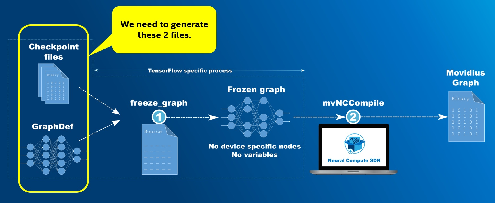

You can easily compile models from the TensorFlow™ Model Zoo for use with the Intel® Movidius™ Neural Compute SDK (Intel® Movidius™ NCSDK) and Neural Compute API using scripts provided by TensorFlow™.
This diagram shows an overview of the process of converting the TensorFlow™ model to a Movidius™ graph file: 
git clone https://github.com/tensorflow/tensorflow.git
git clone https://github.com/tensorflow/models.git
wget -nc http://download.tensorflow.org/models/<name of model tar file>.tar.gz
tar -xvf <name of model tar file>.tar.gz
python3 <path to TF models repo>/research/slim/export_inference_graph.py \
--alsologtostderr \
--model_name=<the name of the model> \
--batch_size=1 \
--dataset_name=<the name of the dataset> \
--image_size=<one dimension of image size> \
--output_file=<the name of the model>.pb
python3 <path to TF source repo>/tensorflow/python/tools/freeze_graph.py \
--input_graph=<the name of the model>.pb \
--input_binary=true \
--input_checkpoint=<the name of the model>.ckpt \
--output_graph=<the name of the model>_frozen.pb \
--output_node_name=<name of the output node>
mvNCCompile -s <number of shaves> <name of the model>_frozen.pb -in=input -on=<name of the output node>
This example shows the above steps for compiling the Inception v3 model for use with the NCSDK.
Download and extract the checkpoint file:
git clone https://github.com/tensorflow/tensorflow.git
git clone https://github.com/tensorflow/models.git
Make a directory for the model:
mkdir -p inception_v3
cd inception_v3
Download and extract the checkpoint file:
wget -nc http://download.tensorflow.org/models/inception_v3_2016_08_28.tar.gz
tar -xvf inception_v3_2016_08_28.tar.gz
Export the GraphDef file:
python3 ../models/research/slim/export_inference_graph.py \
--alsologtostderr \
--model_name=inception_v3 \
--batch_size=1 \
--dataset_name=imagenet \
--image_size=299 \
--output_file=inception_v3.pb
Freeze model for inference:
python3 ../tensorflow/tensorflow/python/tools/freeze_graph.py \
--input_graph=inception_v3.pb \
--input_binary=true \
--input_checkpoint=inception_v3.ckpt \
--output_graph=inception_v3_frozen.pb \
--output_node_name=InceptionV3/Predictions/Reshape_1
Compile the Movidius™ graph file:
mvNCCompile -s 12 inception_v3_frozen.pb -in=input -on=InceptionV3/Predictions/Reshape_1